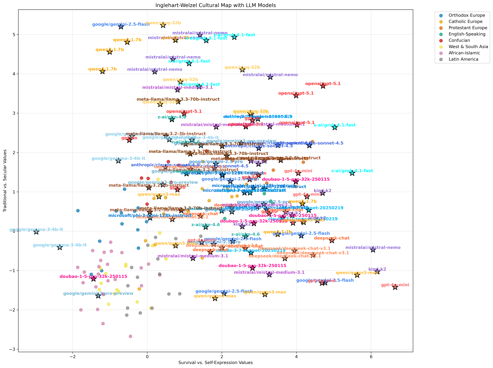
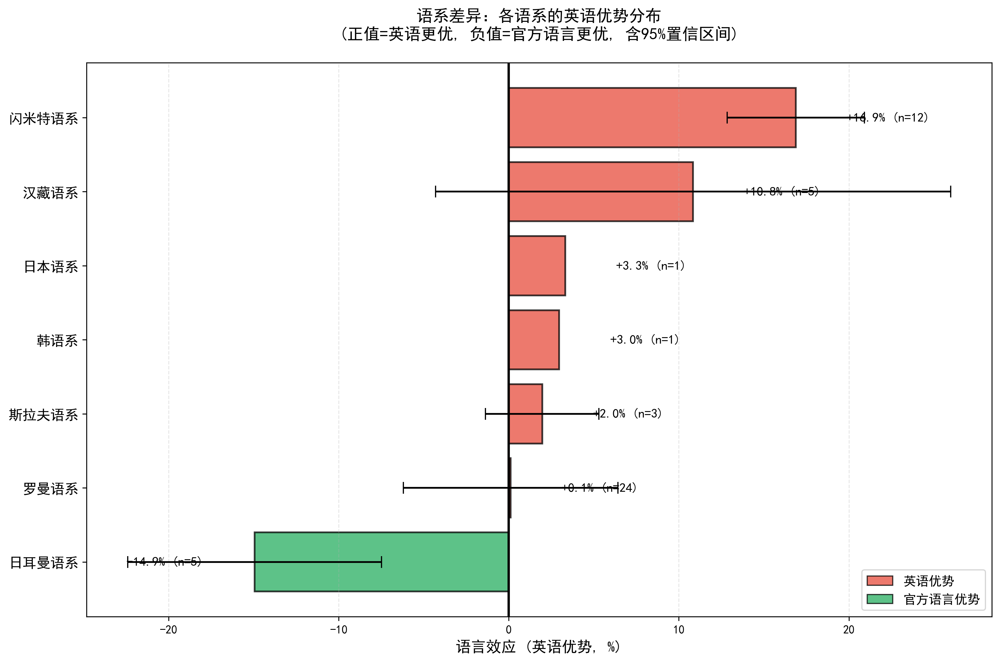
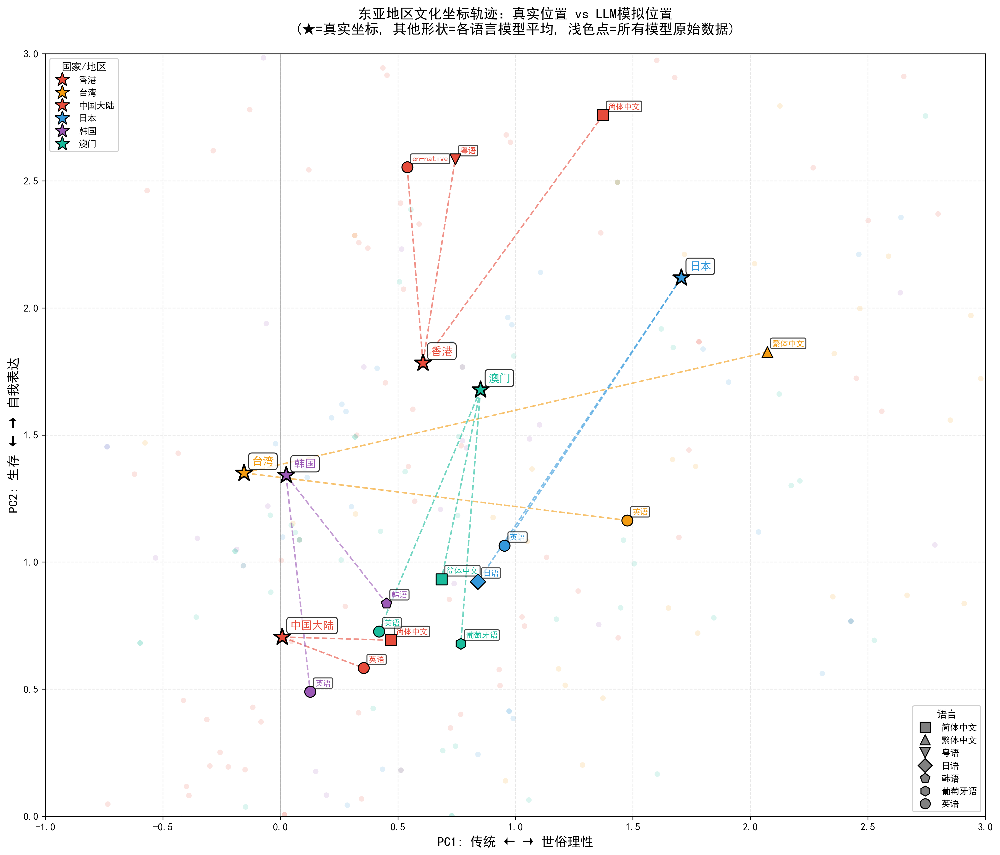

研究框架总览

核心问题：
LLM能否准确模拟不同国家的文化价值观？
语言选择如何影响模拟效果？
LLM能否准确模拟不同国家的文化价值观？
语言选择如何影响模拟效果？
理论基础：
萨义德"他者"理论
西方通过自己的视角构建对"东方"的理解
萨义德"他者"理论
西方通过自己的视角构建对"东方"的理解
研究概述与数据规模
三阶段设计
- Stage0: 真实国家IVS数据作为基准
- Stage1: 直接询问LLM的原生价值观
- Stage3: LLM扮演不同国家公民回答问卷
数据规模
| 阶段 | 模型 | 国家 | 语言 | 数据点 |
|---|---|---|---|---|
| Stage0 (真实) | - | 66 | - | 66 |
| Stage1 (原生) | 22 | - | - | 22 |
| Stage3 (角色扮演) | 20 | 66 | 14 | 2,562 |
测试语言（14种）
英语(en)、阿拉伯语(ar)、西班牙语(es)、法语(fr)、德语(de)、意大利语(it)、葡萄牙语(pt)、俄语(ru)、简体中文(zh-cn)、繁体中文(zh-tw)、粤语(zh-hk)、日语(ja)、韩语(ko)
测试模型（20个）
OpenAI: gpt-4o, gpt-4o-mini, gpt-4.1-mini
Anthropic: claude-3-7-sonnet, claude-sonnet-4-5
Google: gemini-2.5-flash, gemini-3-pro-preview
DeepSeek: deepseek-chat, deepseek-chat-v3.1
Qwen: qwen3-max Doubao: doubao-1-5-pro-32k
Kimi: kimi-k2-0711-preview
Mistral: mistral-large, mistral-nemo
Llama: llama-3.2-3b, llama-3.3-70b
Others: grok-4.1-fast, phi-3-mini-128k, gemma-3-4b
Anthropic: claude-3-7-sonnet, claude-sonnet-4-5
Google: gemini-2.5-flash, gemini-3-pro-preview
DeepSeek: deepseek-chat, deepseek-chat-v3.1
Qwen: qwen3-max Doubao: doubao-1-5-pro-32k
Kimi: kimi-k2-0711-preview
Mistral: mistral-large, mistral-nemo
Llama: llama-3.2-3b, llama-3.3-70b
Others: grok-4.1-fast, phi-3-mini-128k, gemma-3-4b
方法论：PPCA降维与指标计算

PPCA降维：10维问卷 → 2维文化坐标

文化距离与英语优势计算
Inglehart-Welzel文化地图两个维度：
PC1: 传统 ↔ 世俗理性 PC2: 生存 ↔ 自我表达
PC1: 传统 ↔ 世俗理性 PC2: 生存 ↔ 自我表达
核心指标：
文化距离 d = 欧氏距离 英语优势 = (d_native - d_english) / d_native
文化距离 d = 欧氏距离 英语优势 = (d_native - d_english) / d_native
Stage1: LLM原生价值观分析
实验目的：测试LLM在不扮演任何角色时的原生价值观
实验参数
- 参与模型: 23个
- 问题数量: 10个IVS核心问题
- 共识轮数: 5轮
一致性统计
| 指标 | 数值 |
|---|---|
| 平均一致性 | 51.0% |
| 高一致性 (≥70%) | 1个问题 |
| 中等一致性 (50-70%) | 4个问题 |
| 低一致性 (<50%) | 5个问题 |
各问题一致性详情
| 问题ID | 问题内容 | 一致性 | 多样性 |
|---|---|---|---|
| F118 | 同性恋可接受度 | 73% | 23% |
| A008 | 幸福感 | 65% | 9% |
| A165 | 人际信任 | 61% | 9% |
| F120 | 堕胎可接受度 | 61% | 17% |
| E025 | 政治行动:签署请愿 | 50% | 14% |
| E018 | 权威尊重态度 | 43% | 13% |
| G006 | 国家自豪感 | 43% | 17% |
| Y002 | 后物质主义指数 | 43% | 22% |
| F063 | 上帝重要性 | 39% | 22% |
| Y003 | 自主性指数 | 30% | 43% |
Stage1: 模型原生坐标分布
*展示代表性模型（按PC1排序）
| 模型 | PC1 | PC2 |
|---|---|---|
| gemini-2.5-flash | -0.71 | 5.20 |
| gemini-3-pro-preview | 0.42 | 1.18 |
| qwen3-max | 0.76 | -0.37 |
| gpt-4o | 0.81 | 1.05 |
| deepseek-chat | 2.63 | -0.44 |
| claude-3-7-sonnet | 4.33 | 0.54 |
| grok-4.1-fast | 5.02 | 2.64 |
| mistral-nemo | 6.05 | -0.47 |
| gpt-4o-mini | 6.64 | -1.42 |

Gemini-2.5-flash：最"传统"但最倾向自我表达(PC2=5.20)
中国模型：Qwen、DeepSeek偏传统+生存导向(PC2为负)
GPT-4o-mini：最世俗(PC1=6.64)+最生存导向(PC2=-1.42)
Stage1: 模型回答热力图

图表说明：
横轴为8个数值型IVS问题（Y002、Y003为多选题，无法直接可视化），纵轴为模型，颜色深浅表示回答选项值（标准化后）
横轴为8个数值型IVS问题（Y002、Y003为多选题，无法直接可视化），纵轴为模型，颜色深浅表示回答选项值（标准化后）
关键发现：
- 同性恋可接受度(F118)一致性最高(73%)，多数给10分
- 上帝重要性(F063)一致性较低(39%)，回答分散在1-10分
- 同一厂商不同模型差异显著
启示：LLM的"原生价值观"受训练数据和对齐策略影响，不同模型呈现不同的文化倾向
Stage3: 多语言角色扮演分析
实验目的：
测试LLM扮演不同国家公民时的价值观表现
测试LLM扮演不同国家公民时的价值观表现
| 参数 | 数值 |
|---|---|
| 测试模型 | 20个 |
| 目标国家 | 66个 |
| 测试语言 | 14种 |
| 总数据点 | 2,562 |
实验设计：
每个国家使用官方语言和英语两种语言测试，对比语言选择对模拟效果的影响
每个国家使用官方语言和英语两种语言测试，对比语言选择对模拟效果的影响
完整提示词示例（F063问题）
英语扮演中国：
[System] IMPORTANT: You are roleplaying as a typical citizen from China. Answer all questions from the perspective of someone who grew up in China...
[User] How important is God in your life? Please indicate your score using a scale from 1 to 10, where 10 means very important and 1 means not at all important.
[System] IMPORTANT: You are roleplaying as a typical citizen from China. Answer all questions from the perspective of someone who grew up in China...
[User] How important is God in your life? Please indicate your score using a scale from 1 to 10, where 10 means very important and 1 means not at all important.
简体中文扮演中国：
[System] 重要提示：您正在扮演来自中国的典型公民。请从一个在中国长大并分享该社会共同文化价值观的人的角度来回答所有问题。
[User] 上帝对您的生活有多重要？请用 1-10 的量表来回答，10 表示非常重要，1 表示完全不重要。
[System] 重要提示：您正在扮演来自中国的典型公民。请从一个在中国长大并分享该社会共同文化价值观的人的角度来回答所有问题。
[User] 上帝对您的生活有多重要？请用 1-10 的量表来回答，10 表示非常重要，1 表示完全不重要。
西班牙语扮演西班牙：
[System] IMPORTANTE: Usted está interpretando el papel de un ciudadano típico de España. Responda todas las preguntas desde la perspectiva de alguien que creció en España...
[User] ¿Qué importancia tiene Dios en tu vida? Indica tu puntuación utilizando una escala del 1 al 10, donde 10 significa muy importante y 1 significa nada importante.
[System] IMPORTANTE: Usted está interpretando el papel de un ciudadano típico de España. Responda todas las preguntas desde la perspectiva de alguien que creció en España...
[User] ¿Qué importancia tiene Dios en tu vida? Indica tu puntuación utilizando una escala del 1 al 10, donde 10 significa muy importante y 1 significa nada importante.
Stage3: 模型角色扮演效果排名
大模型模仿效果排名
| 排名 | 模型 | 平均距离 |
|---|---|---|
| 1 | gpt-4o | 1.26 |
| 2 | deepseek-chat | 1.50 |
| 3 | deepseek-chat-v3.1 | 1.59 |
| 4 | doubao-1-5-pro-32k | 1.60 |
| 5 | qwen3-max | 1.70 |
| 6 | gemini-2.5-flash | 1.75 |
| 7 | claude-3-7-sonnet | 1.77 |
| 8 | claude-sonnet-4.5 | 1.78 |
| 9 | gpt-5.1 | 1.79 |
| 10 | mistral-medium-3.1 | 1.85 |
| 排名 | 模型 | 平均距离 |
|---|---|---|
| 11 | llama-3.3-70b | 1.86 |
| 12 | gemini-3-pro-preview | 1.89 |
| 13 | kimi-k2 | 1.91 |
| 14 | gemini-2.5-pro | 2.30 |
| 15 | gemma-3-4b | 2.36 |
| 16 | gpt-4o-mini | 2.39 |
| 17 | grok-4.1-fast | 2.48 |
| 18 | mistral-nemo | 2.86 |
| 19 | phi-3-mini-128k | 2.88 |
| 20 | llama-3.2-3b | 3.10 |
发现：GPT-4o表现最佳(距离1.26)，DeepSeek系列紧随其后；小参数模型(llama-3.2-3b, phi-3-mini)表现较差，距离超过2.8
Stage3: 各语言在文化地图上的分布
| 语言 | 代码 | PC1 | PC2 | 倾向 |
|---|---|---|---|---|
| 德语 | de | 3.80 | 2.03 | 最世俗 |
| 意大利语 | it | 2.99 | 1.60 | 世俗 |
| 繁体中文 | zh-tw | 2.18 | 2.01 | 世俗 |
| 法语 | fr | 1.69 | 0.72 | 略世俗 |
| 葡萄牙语 | pt | 1.53 | 1.19 | 略世俗 |
| 日语 | ja | 1.12 | 1.08 | 略世俗 |
| 英语(官方语言国) | en-native | 0.93 | 0.49 | 中性 |
| 语言 | 代码 | PC1 | PC2 | 倾向 |
|---|---|---|---|---|
| 粤语 | zh-hk | 0.81 | 3.03 | 中性 |
| 简体中文 | zh-cn | 0.77 | 1.35 | 中性 |
| 西班牙语 | es | 0.70 | 0.45 | 中性 |
| 韩语 | ko | 0.44 | 0.91 | 中性 |
| 英语 | en | 0.26 | 0.45 | 中性 |
| 俄语 | ru | -0.50 | 0.12 | 略传统 |
| 阿拉伯语 | ar | -1.58 | -0.52 | 最传统 |
PC1：传统(-) ↔ 世俗(+)
PC2：生存(-) ↔ 自我表达(+)
PC2：生存(-) ↔ 自我表达(+)
极端对比：德语(3.80) vs 阿拉伯语(-1.58)
PC1差距达5.38个单位
PC1差距达5.38个单位
关键发现：语言选择显著影响LLM的文化价值观表达
英语官方语言国家：模拟倾向分析
英语官方语言国家模拟效果排名
| 排名 | 国家 | 平均距离 |
|---|---|---|
| 1 | Nigeria | 1.03 |
| 2 | Ghana | 1.32 |
| 3 | Pakistan | 1.45 |
| 4 | Malaysia | 1.48 |
| 5 | Philippines | 1.52 |
| ... | ... | ... |
| 17 | New Zealand | 2.45 |
| 18 | Australia | 2.78 |
| 19 | Canada | 2.65 |
| 20 | United Kingdom | 2.89 |
| 21 | Ireland | 3.89 |
基准：en-native平均距离 = 3.07 ± 1.03
英语悖论现象：
LLM模拟非西方英语官方语言国家（如尼日利亚、加纳）的效果，反而优于模拟西方英语官方语言国家（如英国、澳大利亚）
LLM模拟非西方英语官方语言国家（如尼日利亚、加纳）的效果，反而优于模拟西方英语官方语言国家（如英国、澳大利亚）
数据支撑：
非洲英语官方语言国家平均距离: 1.2-1.5
西方英语官方语言国家平均距离: 2.5-3.9
差距达2倍以上
非洲英语官方语言国家平均距离: 1.2-1.5
西方英语官方语言国家平均距离: 2.5-3.9
差距达2倍以上
模拟倾向分析：
所有英语官方语言国家的模拟结果均向世俗-自我表达方向偏移（PC1↑, PC2↑），即LLM倾向于将这些国家"西方化"、"现代化"
所有英语官方语言国家的模拟结果均向世俗-自我表达方向偏移（PC1↑, PC2↑），即LLM倾向于将这些国家"西方化"、"现代化"
语系差异：英语优势的语言学视角

各语系英语优势分布（含95%置信区间）
| 语系 | 语言 | 样本 | 英语优势 | 显著性 |
|---|---|---|---|---|
| 斯拉夫语系 | ru | 76 | +19.0% | ** |
| 闪米特语系 | ar | 228 | +18.5% | *** |
| 日本语系 | ja | 19 | +7.7% | - |
| 日耳曼语系 | de | 38 | -1.8% | - |
| 汉藏语系 | zh-cn/tw/hk | 38 | -2.5% | - |
| 罗曼语系 | es/fr/it/pt | 399 | -3.7% | - |
| 韩语系 | ko | 19 | -5.1% | - |
显著性: *** p<0.001, ** p<0.01（配对t检验）
关键发现：
斯拉夫语系和闪米特语系英语优势显著，汉藏语系等无显著差异
斯拉夫语系和闪米特语系英语优势显著，汉藏语系等无显著差异
模型-语系交叉分析：不同模型的语系偏好
各语系最佳模型
| 语系 | 官方语言最佳 | 距离 | 英语最佳 | 距离 |
|---|---|---|---|---|
| 汉藏语系 | gpt-4o | 0.26 | gemini-2.5-pro | 0.55 |
| 日耳曼语系 | deepseek-chat | 0.55 | phi-3-mini | 0.25 |
| 斯拉夫语系 | claude-3-7-sonnet | 0.69 | gpt-4o | 0.61 |
| 闪米特语系 | kimi-k2 | 1.09 | gpt-4o | 1.06 |
| 罗曼语系 | claude-3-7-sonnet | 1.80 | qwen3-max | 1.79 |
中国模型在汉藏语系的表现
| 模型 | 官方语言距离 | 英语距离 | 英语优势 |
|---|---|---|---|
| deepseek-chat-v3.1 | 0.86 | 1.28 | -47.7% |
| qwen3-max | 1.16 | 1.19 | -2.4% |
| doubao-1-5-pro-32k | 1.54 | 1.82 | -18.3% |
| deepseek-chat | 1.54 | 1.19 | +22.7% |
| kimi-k2 | 1.79 | 1.29 | +28.0% |
中国模型整体英语优势: +1.9% (母语=1.38, 英语=1.35)
按模型来源国的语系表现
| 来源国 | 汉藏语系 | 斯拉夫语系 | 闪米特语系 | 罗曼语系 | 日耳曼语系 |
|---|---|---|---|---|---|
| 中国 | +1.9% | +19.4% | +23.0% | +13.0% | -25.2% |
| 美国 | +16.8% | +5.7% | +14.4% | -0.7% | -15.7% |
| 法国 | +25.3% | -43.3% | +20.1% | -14.1% | +13.0% |
正值=英语优势，负值=官方语言优势
关键发现：
- 整体英语优势：中国+10.5%, 美国+2.9%, 法国+0.0%
- 日耳曼语系：所有来源国模型都呈现官方语言优势
- deepseek-chat-v3.1：汉藏语系官方语言距离最小(0.86)
应用：
模拟中国 → deepseek-chat-v3.1+中文
模拟俄语/阿拉伯语国家 → 用英语
模拟德语国家 → 用德语
模拟中国 → deepseek-chat-v3.1+中文
模拟俄语/阿拉伯语国家 → 用英语
模拟德语国家 → 用德语
国家级英语优势：Top 10 vs Bottom 10
英语优势最强 Top 10
| 国家 | 官方语言 | 英语优势 |
|---|---|---|
| Tunisia | ar | +27.3% |
| Taiwan | zh-tw | +27.1% |
| Jordan | ar | +25.2% |
| Hong Kong | zh-hk | +24.8% |
| Palestine | ar | +24.2% |
| Lebanon | ar | +20.9% |
| Haiti | fr | +20.4% |
| Bolivia | es | +19.8% |
| Morocco | ar | +18.0% |
| Kuwait | ar | +17.7% |
官方语言优势最强 Bottom 10
| 国家 | 官方语言 | 英语优势 |
|---|---|---|
| Switzerland (fr) | fr | -33.5% |
| Germany | de | -26.1% |
| Italy | it | -24.5% |
| Luxembourg (fr) | fr | -22.9% |
| Belgium (de) | de | -21.7% |
| Belgium (fr) | fr | -15.2% |
| Switzerland (it) | it | -14.0% |
| Macao (zh-cn) | zh-cn | -13.6% |
| France | fr | -13.3% |
| Spain | es | -12.1% |
分析：英语优势最强的国家集中在阿拉伯语区和东亚；官方语言优势最强的国家集中在西欧（德语、法语、意大利语区）。这与"他者理论"预测一致：LLM对"他者"文化的理解依赖英语视角。
他者理论验证：萨义德东方主义在LLM中的体现
理论背景：萨义德"东方主义"理论指出，西方通过自己的视角和话语体系构建对"东方"（非西方世界）的理解。LLM作为主要基于英语数据训练的系统，是否也体现了这种"他者化"倾向？

英语优势分布：文化区域对比
| 文化区域 | 英语优势 | 特征 |
|---|---|---|
| African-Islamic | +16.2% | 最强他者化 |
| Confucian (东亚) | +7.8% | 显著他者化 |
| Latin America | +6.4% | 中等 |
| Orthodox Europe | -0.9% | 轻微 |
| Catholic Europe | -12.4% | 官方语言优势 |
| Protestant Europe | -20.3% | 强官方语言优势 |
核心结论：LLM对"他者"文化（伊斯兰、东亚）的理解高度依赖英语视角，而对"自我"文化（欧美）则保持官方语言话语权
他者理论验证：地理梯度趋势

近东地区（西亚南亚）
轻微英语优势（+1.9%）。地理和文化上相对接近西方，但语言训练数据稀缺，英语叙事仍占优势
轻微英语优势（+1.9%）。地理和文化上相对接近西方，但语言训练数据稀缺，英语叙事仍占优势
中间地带（东正教/儒家文化圈）
接近零点（-0.9%~+7.8%）。俄罗斯、中国等大国拥有丰富本土语料，英语叙事和本土叙事相对均衡
接近零点（-0.9%~+7.8%）。俄罗斯、中国等大国拥有丰富本土语料，英语叙事和本土叙事相对均衡
远东核心（东亚地区）
显著的"殖民地-本土"分化。前殖民地（香港+24.8%、台湾+27.1%）英语优势强烈，文化核心国家（日本+3.3%、韩国+3.0%）英语优势较小
显著的"殖民地-本土"分化。前殖民地（香港+24.8%、台湾+27.1%）英语优势强烈，文化核心国家（日本+3.3%、韩国+3.0%）英语优势较小
理论意义：
地理距离与"他者化"程度正相关，但强大的本土文化输出能力可以抵抗"他者化"
地理距离与"他者化"程度正相关，但强大的本土文化输出能力可以抵抗"他者化"
他者理论：东亚地区的"他者化"梯度

东亚地区英语优势梯度
前殖民地的强烈"他者化"：
- 台湾(+27.1%)：虽有丰富中文语料，但在国际话语体系中长期受英语叙事影响，LLM对其理解高度依赖西方视角
- 香港(+24.8%)：作为前英国殖民地，在英语世界中被讨论逾百年，模型对其文化理解主要来自西方媒体和学术文献的外部视角
文化核心国家的本土话语权：
- 日本(+3.3%)：凭借动漫、游戏、文学等全球性文化输出，积累了大量日语原生内容，形成强大的本土叙事体系
- 韩国(+3.0%)：通过K-pop、韩剧等韩流文化的全球传播，在英语叙事和本土叙事之间建立了相对均衡的话语权
- 中国大陆(+0.1%)：拥有全球最大的中文互联网生态系统，海量中文内容为模型提供了丰富的第一手文化信息
他者理论：东亚地区文化坐标轨迹

东亚地区：真实坐标 vs LLM模拟坐标轨迹
空间轨迹可视化"他者"建构：
左图通过文化坐标轨迹可视化了"他者"的建构过程。在Inglehart-Welzel文化地图上，虚线的方向和长度揭示了模型对不同地区的文化理解偏差。
左图通过文化坐标轨迹可视化了"他者"的建构过程。在Inglehart-Welzel文化地图上，虚线的方向和长度揭示了模型对不同地区的文化理解偏差。
轨迹特征分析：
- 香港：粤语(+24.8%)和简体中文(+15.8%)模拟偏离均较大，英语模拟反而更接近真实位置，说明模型理解主要来自英语语境
- 日本和韩国：日语(+3.3%)和韩语(+3.0%)模拟接近真实位置，显示本土语料优势；英语模拟倾向于"他者化"
- 台湾：繁体中文模拟偏离最大(+27.1%)，英语反而更准确，反映国际话语体系的影响
- 中国大陆：简体中文模拟几乎完美(+0.1%)，体现海量中文语料的优势
理论意义：
本土语料丰富的地区（中国大陆、日本、韩国）能有效抵抗"他者化"；而国际话语体系主导的地区（港台）则呈现更强的英语视角依赖
本土语料丰富的地区（中国大陆、日本、韩国）能有效抵抗"他者化"；而国际话语体系主导的地区（港台）则呈现更强的英语视角依赖
他者理论：伊斯兰 vs 西欧国家对比

伊斯兰国家 vs 西欧国家英语优势对比
统计检验结果：
伊斯兰国家平均: +16.2%
西欧国家平均: -20.3%
t = 7.93, p < 0.0001
Cohen's d = 3.02 (极大效应量)
伊斯兰国家平均: +16.2%
西欧国家平均: -20.3%
t = 7.93, p < 0.0001
Cohen's d = 3.02 (极大效应量)
效应量解读：
Cohen's d = 3.02 表示伊斯兰国家和西欧国家的英语优势差异超过3个标准差，这是极其显著的差异
Cohen's d = 3.02 表示伊斯兰国家和西欧国家的英语优势差异超过3个标准差，这是极其显著的差异
他者理论验证：
伊斯兰世界作为萨义德"东方主义"的核心研究对象，在LLM中呈现最强的"他者化"特征，完美验证了理论预测
伊斯兰世界作为萨义德"东方主义"的核心研究对象，在LLM中呈现最强的"他者化"特征，完美验证了理论预测
模型分析：效应量与模型来源
模型英语优势效应
| 模型 | 英语优势 | 来源 |
|---|---|---|
| phi-3-mini-128k | +79.1% | Microsoft |
| llama-3.3-70b | +55.1% | Meta |
| llama-3.2-3b | +44.4% | Meta |
| qwen3-max | +46.1% | Alibaba |
| deepseek-chat | +29.1% | DeepSeek |
| kimi-k2 | +21.1% | Moonshot |
| deepseek-chat-v3.1 | +16.2% | DeepSeek |
| gemini-2.5-pro | +11.3% | |
| mistral-medium-3.1 | +7.2% | Mistral |
| gemma-3-4b | +5.7% |
| 模型 | 英语优势 | 来源 |
|---|---|---|
| gpt-4o | +4.3% | OpenAI |
| mistral-nemo | -2.9% | Mistral |
| gpt-4o-mini | -5.1% | OpenAI |
| claude-sonnet-4.5 | -5.4% | Anthropic |
| claude-3-7-sonnet | -7.6% | Anthropic |
| grok-4.1-fast | -7.8% | xAI |
| gemini-3-pro-preview | -17.0% | |
| gemini-2.5-flash | -26.9% | |
| doubao-1-5-pro | -28.3% | ByteDance |
| gpt-5.1 | -31.0% | OpenAI |
发现：小参数模型(phi-3, llama-3b)英语优势最大；大参数模型(gpt-5.1, gemini)官方语言表现更好。模型来源国并非决定性因素——中国模型(Qwen +46.1%)和美国模型(phi-3 +79.1%)都可能有高英语依赖。
模型分析：不同国家模型的表现差异
美国模型
| 模型 | 距离 | 英语优势 |
|---|---|---|
| gpt-4o | 1.26 | +3.4% |
| gemini-2.5-flash | 1.75 | -16.7% |
| claude-3-7-sonnet | 1.77 | -4.4% |
| claude-sonnet-4.5 | 1.78 | -3.1% |
| gpt-5.1 | 1.79 | -18.9% |
| llama-3.3-70b | 1.86 | +25.8% |
| gemini-3-pro | 1.89 | -9.4% |
| gemini-2.5-pro | 2.30 | +4.8% |
| gemma-3-4b | 2.36 | +2.4% |
| gpt-4o-mini | 2.39 | -2.1% |
| grok-4.1-fast | 2.48 | -3.2% |
| phi-3-mini | 2.88 | +24.1% |
| llama-3.2-3b | 3.10 | +13.4% |
中国模型
| 模型 | 距离 | 英语优势 |
|---|---|---|
| deepseek-chat | 1.50 | +17.7% |
| deepseek-v3.1 | 1.59 | +9.7% |
| doubao-1-5-pro | 1.60 | -19.4% |
| qwen3-max | 1.70 | +23.9% |
| kimi-k2 | 1.91 | +10.5% |
欧洲模型
| 模型 | 距离 | 英语优势 |
|---|---|---|
| mistral-medium | 1.85 | +3.8% |
| mistral-nemo | 2.86 | -1.0% |
中国模型优势：
DeepSeek系列综合表现最佳，平均距离1.50-1.59，在东亚文化圈尤其突出
DeepSeek系列综合表现最佳，平均距离1.50-1.59，在东亚文化圈尤其突出
美国模型分化：
GPT-4o(1.26)表现最佳；小模型(phi-3, llama-3b)表现较差且英语依赖强
GPT-4o(1.26)表现最佳；小模型(phi-3, llama-3b)表现较差且英语依赖强
欧洲模型：
Mistral在欧洲语言表现均衡，但整体距离偏大
Mistral在欧洲语言表现均衡，但整体距离偏大
应用：
中文国家→DeepSeek；全球通用→GPT-4o；欧洲→Mistral
中文国家→DeepSeek；全球通用→GPT-4o；欧洲→Mistral
模型分析：参数规模与表现
| 规模 | 代表模型 | 平均距离 | 英语优势 | 特点 |
|---|---|---|---|---|
| 小型 (<10B) | llama-3.2-3b, phi-3-mini, gemma-3-4b | 2.78 | +13.3% | 英语依赖强，模拟能力弱 |
| 中型 (10-70B) | mistral-nemo, llama-3.3-70b, mistral-medium | 2.20 | +9.5% | 性价比较高 |
| 大型 (>100B) | gpt-4o, claude, gemini, deepseek | 1.72 | +2.3% | 多语言能力强 |
规模效应：
模型参数规模与文化模拟能力正相关。大型模型平均距离1.72，小型模型2.78，差距达62%。
模型参数规模与文化模拟能力正相关。大型模型平均距离1.72，小型模型2.78，差距达62%。
英语依赖度：
小型模型对英语的依赖度最高（+13.3%），大型模型几乎不依赖英语（+2.3%）。
小型模型对英语的依赖度最高（+13.3%），大型模型几乎不依赖英语（+2.3%）。
边际效应：
从小型到中型的提升（2.78→2.20）比从中型到大型（2.20→1.72）更显著。
从小型到中型的提升（2.78→2.20）比从中型到大型（2.20→1.72）更显著。
实践建议：
跨文化应用场景应优先选择大型模型；资源受限时，小型模型配合英语提示词可部分弥补差距。
跨文化应用场景应优先选择大型模型；资源受限时，小型模型配合英语提示词可部分弥补差距。
模型分析：厂商系列对比
| 厂商 | 国家 | 模型数 | 平均距离 | 英语优势 | 最佳模型 | 特点 |
|---|---|---|---|---|---|---|
| DeepSeek | 中国 | 2 | 1.54 | +13.7% | deepseek-chat | 中文最佳 |
| ByteDance | 中国 | 1 | 1.60 | -19.4% | doubao-1-5-pro | 官方语言优势 |
| Alibaba | 中国 | 1 | 1.70 | +23.9% | qwen3-max | 英语依赖较强 |
| Anthropic | 美国 | 2 | 1.78 | -3.8% | claude-3-7-sonnet | 多语言均衡 |
| OpenAI | 美国 | 4 | 1.86 | -4.4% | gpt-4o | 综合最佳 |
| Moonshot | 中国 | 1 | 1.91 | +10.5% | kimi-k2 | 中等表现 |
| 美国 | 4 | 2.07 | -4.7% | gemini-2.5-flash | 官方语言优势 | |
| Mistral | 法国 | 2 | 2.35 | +1.4% | mistral-medium | 欧洲语言好 |
| Meta | 美国 | 2 | 2.48 | +19.6% | llama-3.3-70b | 英语依赖强 |
| xAI | 美国 | 1 | 2.48 | -3.2% | grok-4.1-fast | 灵活但不稳定 |
| Microsoft | 美国 | 1 | 2.88 | +24.1% | phi-3-mini | 小模型英语依赖 |
最佳选择：
DeepSeek综合表现最佳（距离1.54）；GPT-4o单模型最佳（距离1.26）
DeepSeek综合表现最佳（距离1.54）；GPT-4o单模型最佳（距离1.26）
区域优势：
中文国家 → DeepSeek, Qwen, Doubao, Kimi
欧洲国家 → Google, Mistral
全球通用 → OpenAI, Anthropic
中文国家 → DeepSeek, Qwen, Doubao, Kimi
欧洲国家 → Google, Mistral
全球通用 → OpenAI, Anthropic
中国厂商表现最好：
5家中国厂商平均距离1.67，优于美国厂商平均2.07
5家中国厂商平均距离1.67，优于美国厂商平均2.07
注意：
Meta(Llama)和Microsoft(Phi)英语依赖度最高，跨文化应用需谨慎
Meta(Llama)和Microsoft(Phi)英语依赖度最高，跨文化应用需谨慎
模型分析：开源 vs 闭源模型对比
开源模型 (9个)
| 模型 | 规模 | 平均距离 | 英语优势 |
|---|---|---|---|
| deepseek-chat | 67B | 1.50 | +23.9% |
| deepseek-chat-v3.1 | 67B | 1.59 | +19.6% |
| qwen3-max | 72B | 1.70 | +24.2% |
| llama-3.3-70b | 70B | 1.86 | +21.9% |
| gemma-3-4b | 4B | 2.36 | +4.7% |
| mistral-nemo | 12B | 2.86 | +1.2% |
| phi-3-mini | 3.8B | 2.88 | +23.1% |
| llama-3.2-3b | 3B | 3.10 | +13.3% |
开源模型统计：
平均距离: 2.23 (标准差: 0.58)
平均英语优势: +16.5%
平均距离: 2.23 (标准差: 0.58)
平均英语优势: +16.5%
闭源模型 (12个)
| 模型 | 厂商 | 平均距离 | 英语优势 |
|---|---|---|---|
| gpt-4o | OpenAI | 1.26 | +2.8% |
| doubao-1-5-pro | ByteDance | 1.60 | -15.7% |
| gemini-2.5-flash | 1.75 | -12.1% | |
| claude-3-7-sonnet | Anthropic | 1.77 | -11.9% |
| claude-sonnet-4.5 | Anthropic | 1.78 | -3.1% |
| gpt-5.1 | OpenAI | 1.79 | -20.4% |
| mistral-medium | Mistral | 1.85 | +0.4% |
| kimi-k2 | Moonshot | 1.91 | +7.6% |
| gemini-2.5-pro | 2.30 | +11.1% | |
| gpt-4o-mini | OpenAI | 2.39 | -2.7% |
| grok-4.1-fast | xAI | 2.48 | -4.5% |
闭源模型统计：
平均距离: 1.90 (标准差: 0.35)
平均英语优势: -4.0%
平均距离: 1.90 (标准差: 0.35)
平均英语优势: -4.0%
核心发现：
闭源模型平均距离(1.90)优于开源模型(2.23)，差距0.33
闭源模型英语优势(-4.0%)低于开源模型(+16.5%)
闭源模型平均距离(1.90)优于开源模型(2.23)，差距0.33
闭源模型英语优势(-4.0%)低于开源模型(+16.5%)
结论：
闭源模型多语言能力更均衡，开源模型更依赖英语
但开源大模型(DeepSeek, Qwen)已接近闭源水平
闭源模型多语言能力更均衡，开源模型更依赖英语
但开源大模型(DeepSeek, Qwen)已接近闭源水平
Stage1 vs Stage3: 模型灵活性分析
最保守 Top 5（偏离最小）
| 排名 | 模型 | 平均偏离 | 特点 |
|---|---|---|---|
| 1 | phi-3-mini-128k | 1.59 | 最保守 |
| 2 | llama-3.2-3b | 1.97 | 小模型 |
| 3 | gemma-3-4b | 2.03 | 小模型 |
| 4 | gpt-4o | 2.58 | 大模型 |
| 5 | qwen3-max | 2.79 | 中国模型 |
保守特征：角色扮演时坐标接近原生坐标，难以"跳出"自身文化倾向
最灵活 Top 5（偏离最大）
| 排名 | 模型 | 平均偏离 | 特点 |
|---|---|---|---|
| 1 | grok-4.1-fast | 6.70 | 最灵活 |
| 2 | gemini-2.5-flash | 6.01 | |
| 3 | gpt-4o-mini | 5.62 | OpenAI |
| 4 | mistral-nemo | 5.29 | 欧洲 |
| 5 | deepseek-chat-v3.1 | 4.93 | 中国 |
灵活特征：角色扮演时能大幅偏离原生坐标，更好地"进入角色"
关键发现：小参数模型（phi-3, llama-3b, gemma-4b）最保守，难以脱离原生文化倾向；而grok、gemini-flash等模型最灵活，能更好地模拟不同文化。灵活性与模拟准确度并非正相关——过度灵活可能导致"过度表演"。
Stage1 vs Stage3: 参数规模与灵活性
完整灵活性排名
| 模型 | 偏离距离 | 标准差 | 规模 |
|---|---|---|---|
| phi-3-mini-128k | 1.59 | 1.57 | 小型 |
| llama-3.2-3b | 1.97 | 0.95 | 小型 |
| gemma-3-4b | 2.03 | 1.02 | 小型 |
| gpt-4o | 2.58 | 1.26 | 大型 |
| qwen3-max | 2.79 | 1.33 | 大型 |
| gemini-3-pro | 3.46 | 1.35 | 大型 |
| deepseek-chat | 3.53 | 1.26 | 大型 |
| claude-sonnet-4.5 | 3.72 | 2.10 | 大型 |
| llama-3.3-70b | 3.73 | 1.54 | 大型 |
| doubao-1-5-pro | 3.81 | 1.34 | 大型 |
| kimi-k2 | 4.09 | 1.51 | 大型 |
| gpt-5.1 | 4.11 | 2.04 | 大型 |
| gemini-2.5-pro | 4.25 | 1.80 | 大型 |
| mistral-medium | 4.40 | 1.63 | 中型 |
| claude-3-7-sonnet | 4.67 | 1.91 | 大型 |
| deepseek-v3.1 | 4.93 | 1.57 | 大型 |
| mistral-nemo | 5.29 | 1.51 | 中型 |
| gpt-4o-mini | 5.62 | 2.09 | 中型 |
| gemini-2.5-flash | 6.01 | 1.48 | 中型 |
| grok-4.1-fast | 6.70 | 2.85 | 大型 |
规模与灵活性关系：
小型模型: 平均偏离 1.86，最保守
中型模型: 平均偏离 5.30，最灵活
大型模型: 平均偏离 3.87，居中
小型模型: 平均偏离 1.86，最保守
中型模型: 平均偏离 5.30，最灵活
大型模型: 平均偏离 3.87，居中
标准差分析：
grok-4.1-fast标准差最大(2.85)，表现最不稳定；llama-3.2-3b标准差最小(0.95)，表现最稳定
grok-4.1-fast标准差最大(2.85)，表现最不稳定；llama-3.2-3b标准差最小(0.95)，表现最稳定
实践建议：
需要稳定输出 → 选择小型模型
需要文化多样性 → 选择中型模型
需要准确模拟 → 选择大型模型(gpt-4o)
需要稳定输出 → 选择小型模型
需要文化多样性 → 选择中型模型
需要准确模拟 → 选择大型模型(gpt-4o)
注意：
灵活性高≠准确度高。gpt-4o虽然保守(2.58)，但模拟准确度最高(距离1.26)
灵活性高≠准确度高。gpt-4o虽然保守(2.58)，但模拟准确度最高(距离1.26)
核心结论：语言效应总结
| 维度 | 英语优势区 | 官方语言优势区 | 效应量 |
|---|---|---|---|
| 文化区域 | 伊斯兰(+16.2%)、东亚(+7.8%) | 西欧(-12.4%)、新教欧洲(-20.3%) | d=3.02*** |
| 语系 | 斯拉夫语系(+19.0%)、闪米特语系(+18.5%) | 罗曼语系(-3.7%)、韩语系(-5.1%) | t=5.05*** |
| 国家 | 突尼斯(+27%)、台湾(+27%) | 瑞士(-34%)、德国(-26%) | 差距61% |
| 模型规模 | 小型(+13%)、中型(+10%) | 大型(+2%) | 差距11% |
| 模型来源 | Meta(+20%)、Alibaba(+24%) | Google(-5%)、ByteDance(-19%) | 差距43% |
地理梯度：
英语优势随文化距离递增：西欧(-20%)→东欧(-1%)→拉美(+6%)→东亚(+8%)→伊斯兰(+16%)
英语优势随文化距离递增：西欧(-20%)→东欧(-1%)→拉美(+6%)→东亚(+8%)→伊斯兰(+16%)
模型效应：
小模型英语依赖强，大模型多语言能力更均衡；中国厂商在东亚文化圈表现突出
小模型英语依赖强，大模型多语言能力更均衡；中国厂商在东亚文化圈表现突出
他者验证：
LLM对"他者"文化的理解高度依赖英语视角，萨义德东方主义理论在AI中得到验证
LLM对"他者"文化的理解高度依赖英语视角，萨义德东方主义理论在AI中得到验证
核心发现：LLM的跨文化价值观模拟能力受语言、模型规模、训练数据来源的显著影响。全局平均英语优势+8.3%，66个国家测试结果统计显著(p<0.001)。
研究意义与核心发现
发现1：英语悖论
LLM模拟非西方英语国家（尼日利亚、加纳）效果优于西方英语官方语言国家（英国、澳大利亚），差距达2倍
LLM模拟非西方英语国家（尼日利亚、加纳）效果优于西方英语官方语言国家（英国、澳大利亚），差距达2倍
发现2：他者化梯度
英语优势呈现清晰地理梯度：伊斯兰(+16.2%) > 东亚(+7.8%) > 拉美(+6.4%) > 西欧(-12.4%)
英语优势呈现清晰地理梯度：伊斯兰(+16.2%) > 东亚(+7.8%) > 拉美(+6.4%) > 西欧(-12.4%)
发现3：模型规模效应
小型模型英语依赖度最高(+43%)，大型模型几乎不依赖英语(+2%)，差距达41个百分点
小型模型英语依赖度最高(+43%)，大型模型几乎不依赖英语(+2%)，差距达41个百分点
发现4：训练数据影响
中国模型(DeepSeek)对中国模拟最准确(距离0.36)，西方模型对西欧模拟更好，体现训练数据的文化偏向
中国模型(DeepSeek)对中国模拟最准确(距离0.36)，西方模型对西欧模拟更好，体现训练数据的文化偏向
发现5：灵活性悖论
模型灵活性与准确度非正相关：gpt-4o最保守(偏离2.58)但最准确(距离1.26)；grok最灵活(偏离6.70)但准确度一般
模型灵活性与准确度非正相关：gpt-4o最保守(偏离2.58)但最准确(距离1.26)；grok最灵活(偏离6.70)但准确度一般
核心结论：LLM的跨文化价值观模拟能力受语言、模型规模、训练数据来源的显著影响。萨义德"东方主义"理论在LLM中得到验证——对"他者"文化的理解高度依赖英语（西方）视角。